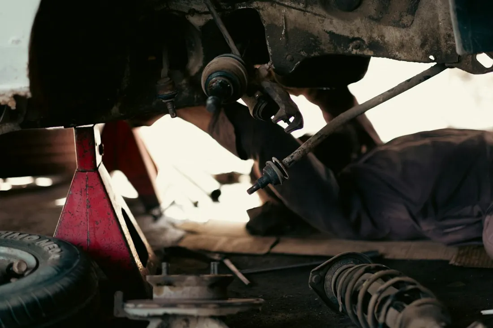
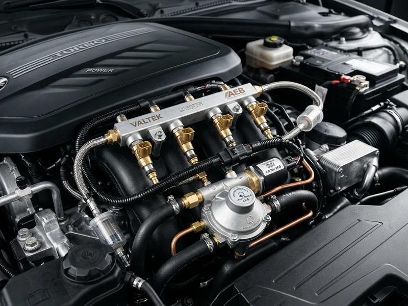

Motor yapısı
Motor tipi ve enjeksiyon yapısı, uygun sistem seçimini doğrudan etkiler. Direkt enjeksiyonlu motorlarda farklı çözümler gerekebilir.
Sincan'daki servisimizde LPG dönüşümünü nasıl planladığımızı ve sürecin hangi adımlardan oluştuğunu öğrenin.
LPG dönüşümü; benzinle çalışan bir araca LPG (otogaz) sistemi eklenerek aracın LPG ile de çalışabilmesini sağlayan uygulamadır. Sistem, motor bölmesindeki ekipmanlar ve bagaj bölümündeki tanktan oluşur.
Uygulama; aracın motor tipine, hacmine ve kullanım biçimine göre planlanır. Her araç için aynı sistem uygun olmadığından önce değerlendirme yapılır.

Her adımda ne yapıldığını ve sırada ne olduğunu bilerek ilerlersiniz.
Araç marka-model, motor bilgisi ve kullanım alışkanlığınızı paylaşırsınız.
Araç yerinde incelenir; uygun sistem seçenekleri ve kapsam belirlenir.
Planlanan işlemler uygulanır; süreç boyunca bilgi verilir.
Sistem kontrol edilir; bakım ve kullanım konusunda bilgilendirme yapılır.
LPG dönüşümünün uygunluğu tek bir kritere göre belirlenmez. Aşağıdaki başlıklar ön değerlendirmede dikkate alınır.
Motor tipi ve enjeksiyon yapısı, uygun sistem seçimini doğrudan etkiler. Direkt enjeksiyonlu motorlarda farklı çözümler gerekebilir.
Aracın kilometresi, genel motor durumu ve günlük kullanım yoğunluğu değerlendirmede dikkate alınır.
Tankın konumlandırılacağı alan, bagaj kullanım ihtiyacınız ve yedek lastik boşluğu birlikte planlanır.
Doğru karar için yalnızca avantajları değil, sürecin sınırlarını da bilmek gerekir.
Kesin tasarruf oranı veya tutar taahhüdü verilmez; sonuç araç, sürüş biçimi, ayarlar ve güncel yakıt fiyatlarına göre değişir.

En sık sorulan üç soruyu burada yanıtladık; tüm sorular için S.S.S. sayfamıza göz atın.
Her araç için uygunluk aynı değildir. Motor tipi, motor hacmi, araç yaşı, bagaj yapısı ve mevzuat şartları belirleyicidir. Kesin değerlendirme, aracın yerinde incelenmesiyle yapılır.
Süre; araç modeli, seçilen sistem, montaj kapsamı ve atölye yoğunluğuna göre değişir. Randevu alırken aracınız için tahmini süre bilgisi verilir.
LPG'nin litre fiyatı genellikle benzinden düşüktür; ancak enerji içeriği farklı olduğu için litre bazında tüketim artabilir. Net tasarruf; araç, sürüş biçimi, ayarlar ve güncel fiyatlara göre değişir. Yüzde veya tutar garantisi verilemez.
Atmosferik, turbo ve direkt enjeksiyonlu motorlar farklı hava-yakıt dinamiklerine sahiptir. Sistem seçimi aracın motor yapısına ve kullanım biçimine göre yapılır.
Yaygın kullanılan sıralı sistem; enjektör rayı, regülatör, gaz hattı ve elektronik kontrol ünitesinden oluşur. Montaj öncesinde motorun genel durumu kontrol edilir.
Yüksek basınçla çalışan turbo motorlarda daha geniş debili regülatör ve hızlı enjektörler gerekir. Sistem, motorun basınç değerlerine göre seçilir.
TSI, TFSI, GDI, EcoBoost ve PureTech gibi direkt püskürtmeli motorlarda karma veya sıvı LPG sistemleri değerlendirilir. Benzin enjektörlerinin korunması bu dönüşümün temel şartıdır.
Her motor tipi için uygunluk aynı değildir. Aracınızın motor kodunu ve mevcut durumunu paylaşarak ön değerlendirme alabilirsiniz.
Montaj; ön kontrolden yol testine kadar planlı adımlarla yürütülür. Aşamalar aracın durumuna göre kısaltılabilir veya genişletilebilir.
İşlem öncesinde kapsam ve süre konuşulur; montaj sırasında yapılan işlemler ve değişen parçalar gösterilir.
Ön Değerlendirme AlSüre ve kapsam araca göre değişir; kesin bilgi işlem öncesinde verilir.
Motorun benzin haritası, yakıt düzeltme değerleri ve ateşleme bileşenleri kontrol edilir.
Motor hacmi, silindir sayısı, enjektör debisi ve manifold yapısına uygun kit belirlenir.
Elektrik tesisatı izole edilir; manifold nozülleri eşit mesafe ve açıyla açılır.
Tank, boru ve regülatör hatları elektronik dedektörle kontrol edilir.
Araç yol testine çıkarılır; montaj projesi ve faturalar teslim edilir.

Montaj ve işçilik garantisi, kullanılan kit ve işlem kapsamına göre değişir. Güncel garanti şartları için bize danışın.

Marka-model ve motor bilginizi paylaşın; uygunluk ve süreç hakkında ön bilgi alın.